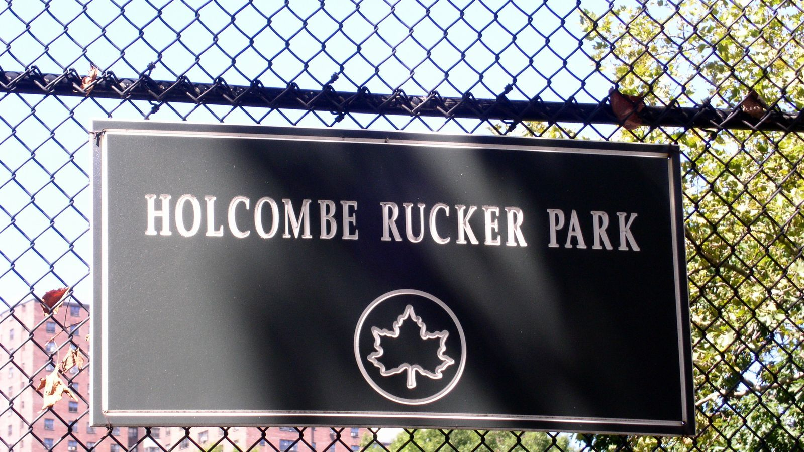

アスファルトの聖地 —— ラッカーパークとストリートの系譜
ニューヨーク、ハーレムの一角にあるただの屋外コート。だがバスケットボールの世界で「ラッカーパーク」の名を知らない者はいない。NBAではない場所で、バスケはもうひとつの文化になった。

審判より観客が裁くコート
ラッカーパークの伝説は、地域の子どもたちのために大会を始めたホルコム・ラッカーという一人の教育者から始まった。夏になるとNBAのスター選手までもがこのアスファルトに現れ、プロの肩書きが通用しない真剣勝負が繰り広げられてきた。ここで観客を沸かせるのはスタッツではない。相手を置き去りにするクロスオーバー、意表を突くパス、つまり「魅せるプレー」だ。
フェンスにしがみついた観客の歓声が、事実上の採点になる。コートネームを与えられた選手は、本名よりもその名で語り継がれる。ストリートボールは、競技であると同時に路上のエンターテインメントとして進化した。
ミックステープが世界に飛ばした
2000年前後、このストリートの美学を世界中に拡散したのがミックステープ映像だった。粗い画質のハンディカム映像に、ヒップホップが乗る。技が決まるたびに観客がコートになだれ込む。あの熱は、きれいに整えられた放送映像には決して映らないものだった。
いま、その役割はスマホとSNSが引き継いでいる。日本の公園で撮られた1本のクロスオーバーが、翌朝には海の向こうで再生されている時代。アスファルトの上の即興と、それを記録するカメラ。ストリートボールの系譜は、形を変えながら今日も続いている。